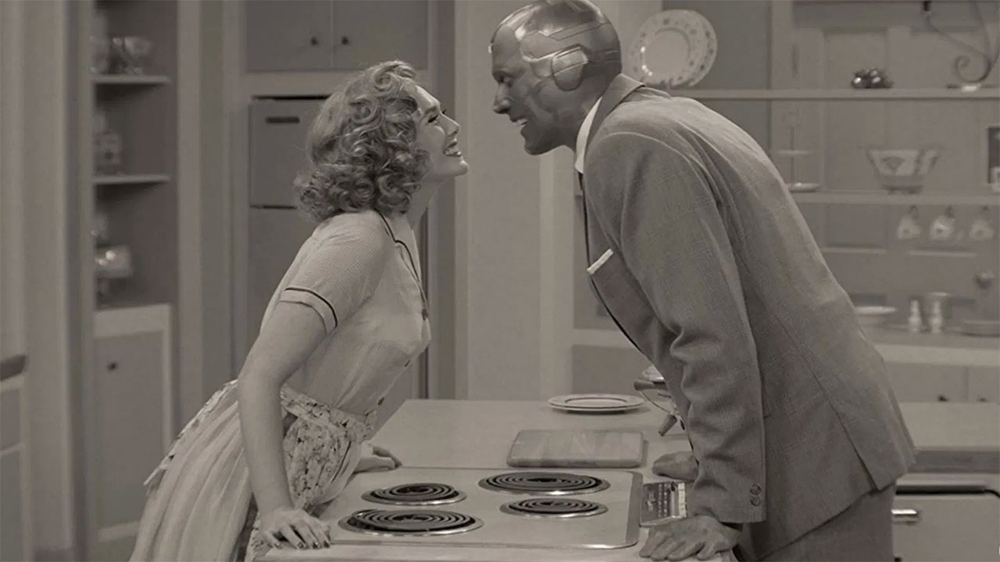
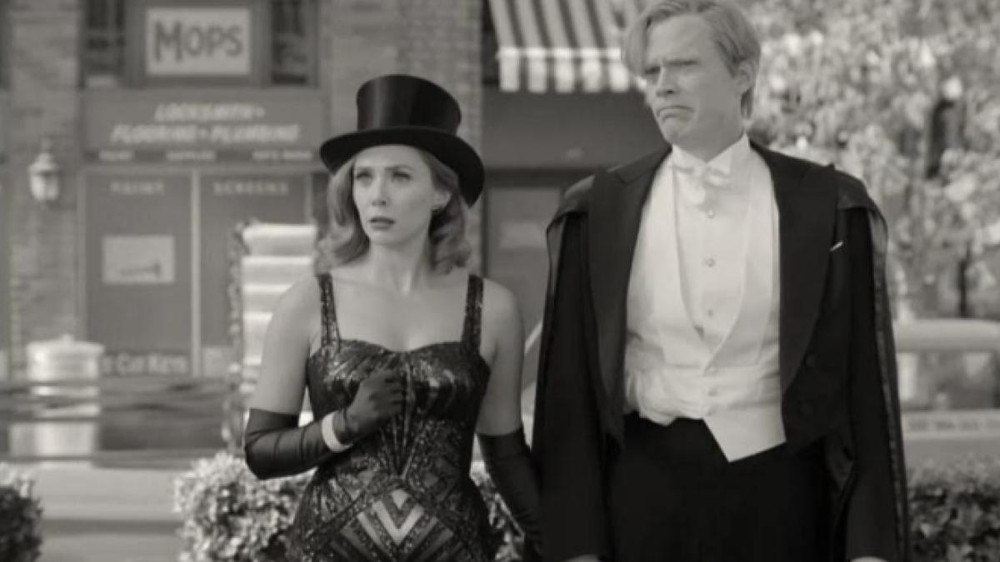
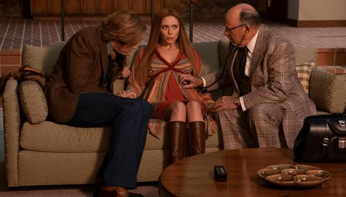
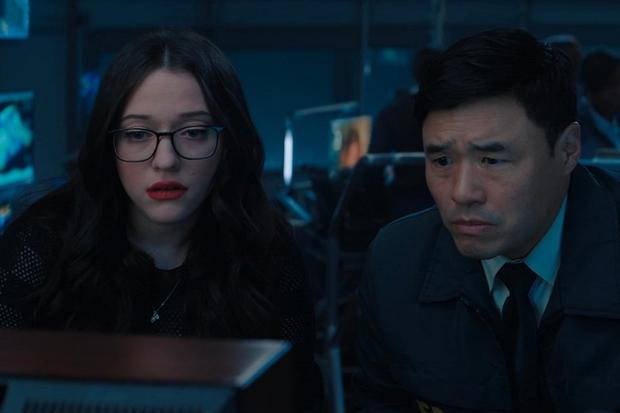
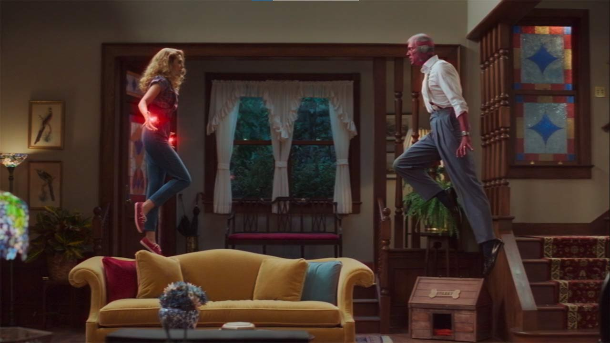
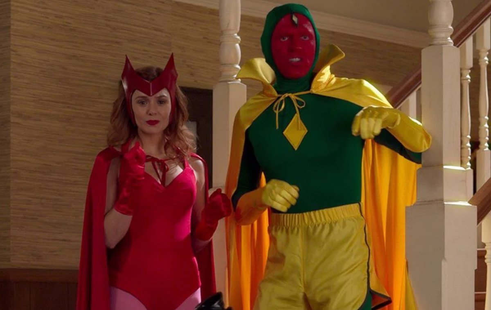
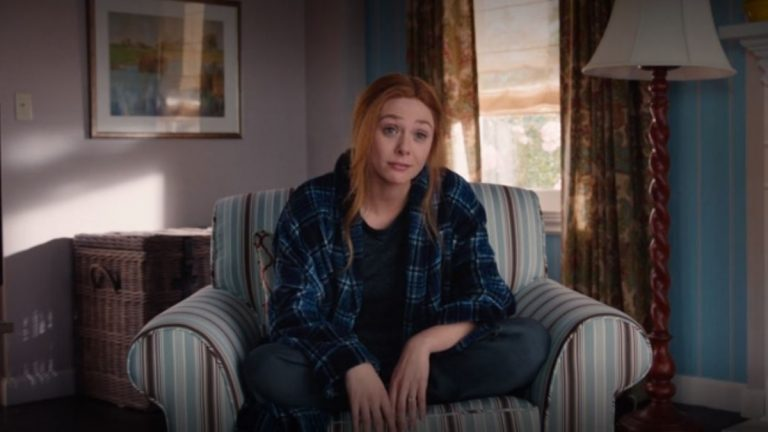
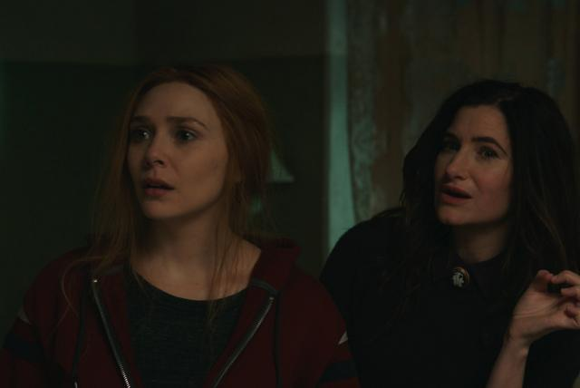
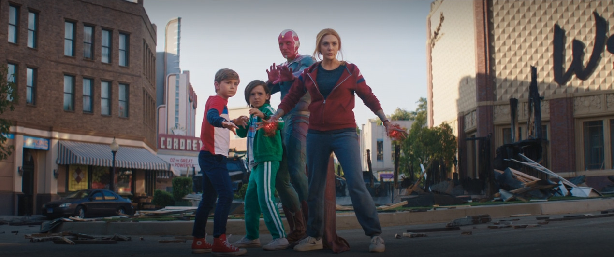

Los links de cada pagina pueden tener anuncios y/o ventanas emergenetes
WandaVision
Episodios 1

Wanda y Vision luchan por ocultar sus poderes durante la cena con el jefe de Vision y su esposa.Click aqui para ver el capitulo!
Episodio 2

En un esfuerzo por encajar, Wanda y Vision realizan un acto de magia en su programa de talentos de la comunidad.Click aqui para ver el capitulo!
Ahora en color

El embarazo de Wanda frustra sus poderes mientras ella y Vision se preparan para un parto acelerado.Click aqui para ver el capitulo!
We Interrupt This Program

Monica Rambeau, encargada de una tarea especial con respecto a las armas sensibles, desaparece.Click aqui para ver el capitulo!
En un episodio muy especial ...

Wanda aborda las preocupaciones de Vision cuando comienza a sospechar del extraño comportamiento de los vecinos.Click aqui para ver el capitulo!
¡Nuevo Halloween Spooktacular!

Los disturbios en Halloween separan a Wanda de Vision, quien investiga la actividad anómala en Westview.Click aqui para ver el capitulo!
Rompiendo la cuarta pared

Monica planea su regreso a la anomalía mientras Wanda navega por una serie de complicaciones inquietantes y Vision forma una nueva alianza para ayudar.Click aqui para ver el capitulo!
Anteriormente en

Wanda se embarca en un viaje inquietante revisando su pasado para conocer su presente y su futuro.Click aqui para ver el capitulo!
Episodio 9

Los acontecimientos de WandaVision llegan a un punto crítico y se determinan los destinos de todos los que participaron.Click aqui para ver el capitulo!
Todos los links de los capitulos son sacados desde la pagina https://cuevana3.cc/. Esto se hizo solamente para practica de estudio de Programacion Full Stack.